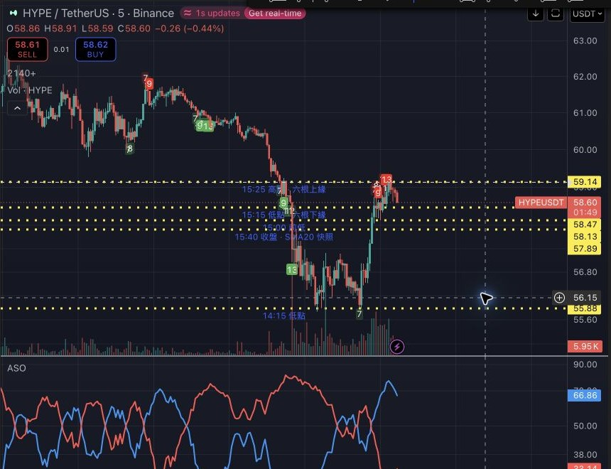
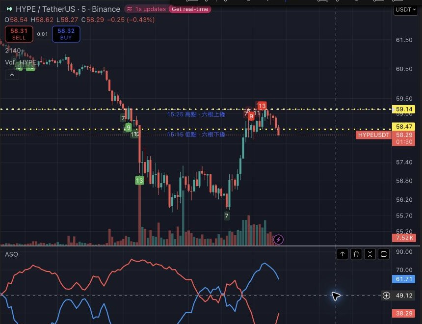
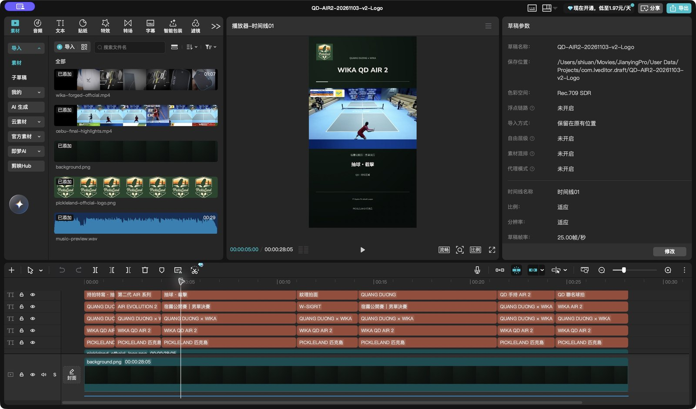
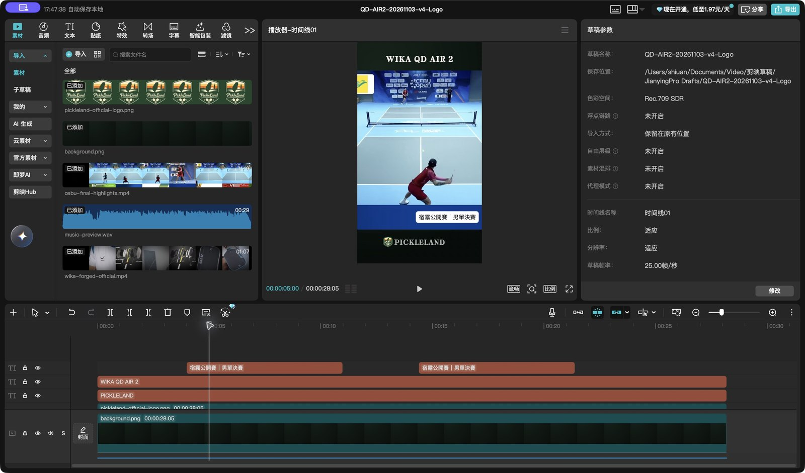
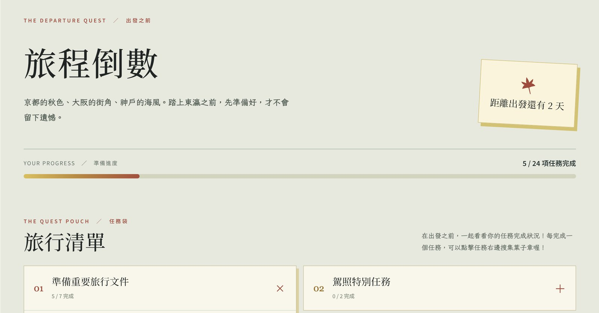
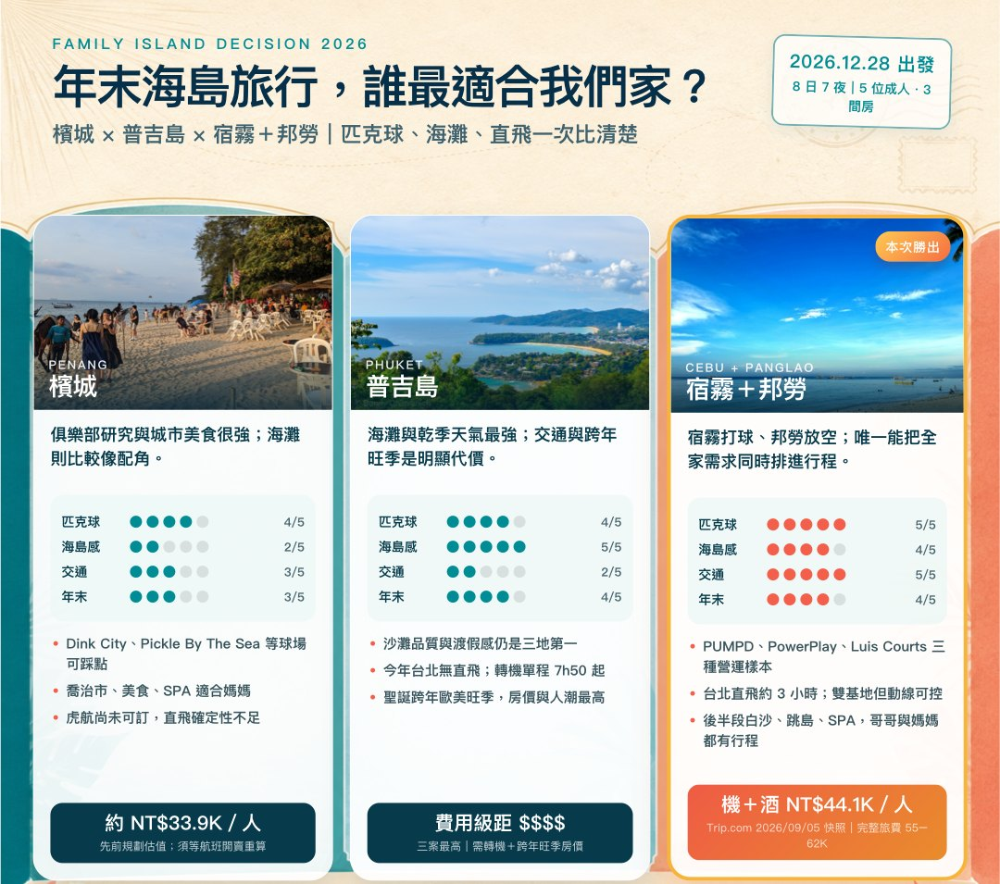

打卡之後 · AFTER WORK
下班後，
我用 AI 做的三件事
看盤、剪片、排旅遊，三件都是我自己的生活。
文宣 × Codex ｜ 磊山社團課 2026.11.27
你們寫在作業裡的兩句話
「每天可以看，通知我知道美元的匯率的走勢」10/2 社團課，一位同學
「AI真的強到太可怕了，這兩天幾乎每天五小時容量連續用完…實在太過癮了」作業 #2，一位同學
今天這堂，我分享自己下班後拿 Codex 做的事。
我下班後拿 Codex 做的五件事，
今天挑你們最可能用到的三件
- 1看盤：請它陪我盯走勢、幫我挑毛病今天講
- 2剪片：線上直播錄完，交給它跟剪映今天講
- 3整理會議紀錄第一堂教過了
- 4排旅遊：家族旅行、朋友出國今天講
- 5匹克球部落格網站下課想聽再抓我
01 看盤
我請 AI 陪我盯盤，
結果虧了 100 美元
11/21 到 11/25，五個晚上的真實對話。
以下是我自己的學習紀錄，不構成投資建議。AI 全程只看圖、畫線、算數字，沒有幫我下單。
下班才有空看盤，一個人看圖，
很容易只看到自己想看的
一種加密貨幣。24 小時都在交易，下班後也看得到價格在動。
最近一次跌到的最低價。可以想成這段時間的「地板」。
買之前先決定「跌到哪裡我就賣」。像出門前先說好，最多花多少就回家。
股票、基金、匯率也一樣有價格走勢圖，下面的做法都能換過去用。
第一句話，我連要用哪個軟體都不知道
它第一個提案我不喜歡，我就直接講我要的樣子


⇆ 第一版：五條線改完：兩條拖曳中間的橘線比對（或按 B）
它畫了五條線，
我只回一句
盈虧比：可能賺的空間 ÷ 可能賠的空間。數字越大，這筆越划算。
最後它直接在我的圖上畫好：
在哪買、跌到哪走、漲到哪收

週一晚上 11 點，我買了以太幣，
然後問它：我這筆買得好嗎？

它在圖上畫了一條地板
40 分鐘後，價格跌破那條地板
你誤導了我，現在你要怎麼賠償？」死多頭：一心覺得會漲。空方走勢：圖在往下走。
AI 會順著你講話。
要它挑毛病，先別說你已經買了
停損有守住，虧損停在 100 美元
跌破前低就出場，沒有越賠越多。
下次先這樣問
「假如不知道你手上有多單，只看這張圖，我會怎麼判斷？」
這是它檢討時問自己的話。下次我改成先問它：假如不知道我手上有單，你會怎麼判斷？
買房、買車、換工作也一樣：問 AI 之前，先別讓它知道你已經想要了。
我睡著了，它會自己停
「如果超過 2 次沒有收到我的任何回覆，就自動停止，代表我睡覺了」
每天早上 8 點，幫我整理的走勢，先列支持跟反對的理由，再說你的判斷。
守則：先假裝不知道我有沒有買。資料附來源，不確定就說不確定。
以前要寫程式的回測，
現在一句話跑完
它沒有硬湊一個「會賺的方法」，資料不夠就直說
看不懂結果？
請它做成互動報告
02 剪片
一小時的線上直播錄完，
後面那一串交給它
Google Meet 錄影 → 剪映 → YouTube。
剪映：免費剪片軟體，手機、Mac、Windows 都有。
直播錄完，
後面還有七件事要做
剪掉開頭等人、結尾閒聊
上字幕
分章節，讓人跳著看
做縮圖
寫 YouTube 標題和說明
寫一段 LINE 群分享文
把大家在聊天室的提問整理成問答
只想在剪映裡做最後修改
它把錄影變成一份剪映檔，我打開就能接著改
一小時的會員直播
聽完整支、上字幕、剪掉頭尾
螢幕滿版，右下角放圓形人像；字幕、畫面分開好改
只做最後的判斷
標題、說明、章節、縮圖、LINE 分享文、問答整理

聊天室 34 則提問
它整理成 17 組問答，每一題附上影片的時間點，方便大家回頭找。
指令很口語，我就是邊看邊講我要什麼
做順一次，就請它寫成 SOP（固定做法），下一次它照著做


⇆ Codex 初剪Sonia 改完一支球拍短影片，同一個第 5 秒。拖曳比對（或按 B）
同一秒，你第一眼
看到球員，還是字？
七段畫面和剪接點都用 Codex 剪的。Sonia 只把字卡從 45 個減到 4 個，球員放大。
它說做好了，
我一定自己打開剪映檢查
這支幫我，給看。
守則：做完先列出你改了哪些地方，我看過再定稿。
03 旅遊
四個人一起出國，
行前清單放哪裡？
所以我請 Codex 做了一個旅行網站。
準備進度 5／24，還剩幾項，一眼就看到

清單裡有一項，
你們每天都在幫客戶提醒
「安排旅遊保障：
買張旅平險或旅遊不便險保單吧！」
這一項已經蓋章了。

上一次是家族旅行，問題更多

？猜猜看，
我們家最後選哪裡？
宿霧＋邦勞。沒有明顯短板：爸爸跟我能打球，媽媽跟哥哥能放空，台北直飛約 3 小時。
後來爸媽改買了 1/4 出發的機票，行程又重排了一次。圖上是當時的版本，價格是 9/5 查的估算。
家族群組吵不完的行程，
先丟給它當第三方
把群組對話整段貼上，它會看出每個人在意什麼。
我們想在出國，幫我比較地點，做成一張可以丟到群組的比較圖。
守則：價格寫明是估算和查詢日期，還沒確定的寫「待確認」。
三件事，我都用這四個動作跟它講話
先講卡在哪
「普吉島的機票一直沒有出來」
不喜歡就直接嫌
「太多線了，沒意義」
「這樣不行，你要做得像是旅行社廣告」
用自己的標準驗收
「實際打開接手編輯，不要只驗證檔案」
做順了就存起來
「請你把我們今天的討論整理成一個新的專案」
這四句，明天你也能照著講。
另外兩件，下課想聽再來抓我
錄音丟進去，出來會議紀錄和下一步。你們第一堂就做過。
排程找最新影片 → 寫成文章上架 → 做成字卡、發 LINE 社群 → 辦訓練營、開箱球拍。
今晚下班之後
挑一件生活裡的麻煩，
丟給它試試看
做出來了，傳到群組給我看。